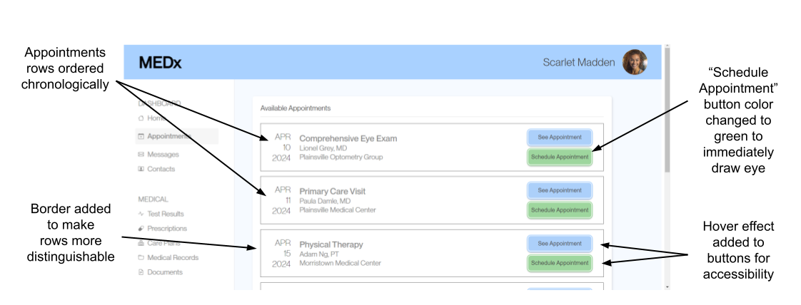
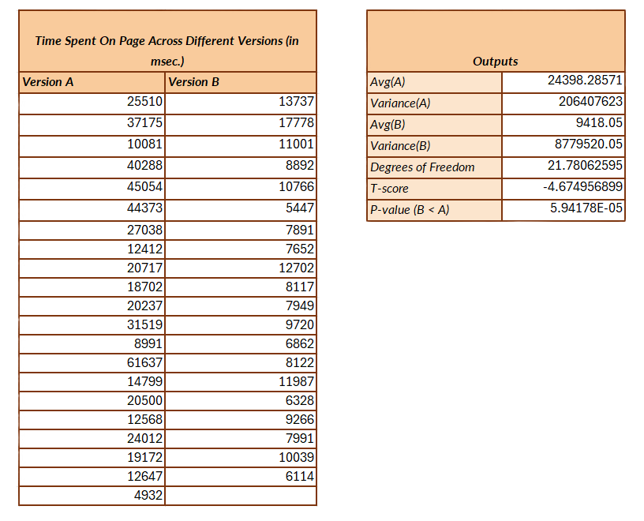
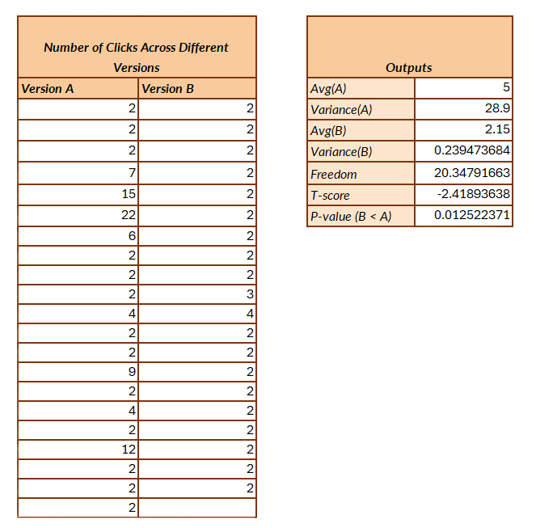
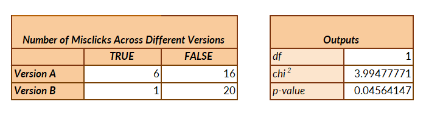

Objective:
The objective of this project was to gain experience building web apps in React with an aggregator function. I created a sandwitch builder app that lets you add ingrediants and make your own sandwitch. The app comes with sort and filter features to sort/filter though items (nut butters, jams, toppings).
Competitive Analysis
First, we want to research other websites with aggregator functions. I chose 3 websites with a favoriting function. I chose to compare Etsy, Sephora, and Amazon's favoriting functionality and to outline the differences in a comparison chart.
Metrics
- Time on Page : Time spent on page to complete the task.
- Number of Clicks : Number of clicks on the page.
- If Misclicked : A boolean representing if a user clicked a button not relevant to the task.
Webpage Version A
I tested on a doctor's office webpage. We are trying to design this webpage to make it easy to book an appointment.
The original version of the webpage has some usability issues: the light blue buttons were hard to see and the appointment rows were not ordered chronologically. Both these issues could make it difficult for the user to book an appointment.
Webpage Version B
This version fixes some of the usability issues and makes other small changes to the webpage. But is it "better?" Let's find out!
Statistical Analysis
All participants were asked to schedule an appointment with Adam Ng, MD at Morristown Medical Center on April 23, 2024 as their task. For all tests, I used an alpha value of 0.05. So, a test is statistically significant if the p-value is less than the alpha.
Time on Page One Tailed T-Test
Time on page is a continous variable (meaning the time spent can extend until infinity), so I knew to use a T-test. I chose to test this metric using a one-tailed T-test, because I wanted to see if version B optimized the time it took to complete the task on the webpage. I hoped that version B would make it easier for users to book an appointment, so time spent on version B would be less than time spent on version A.
Null Hypothesis: There is no difference in the time it takes to complete the task for version A and version B or version A takes less time.
Alternative Hypothesis: Version B takes less time to complete the task.
Conclusion: The p-value is the level of significance. The p-value for this test was less than 0.01, which is smaller than the alpha. So, we accept the alternative hypothesis. The t-score is the magnitude of difference between the two groups. We received a negative t-score, meaning there was a significant decrease in time spent on the page from version A to version B. We are 95% confident that it takes users less time on version B to book an appointment.
Summary Statistics: The average time it took to complete the task in version A was 24.4 seconds, but in version B it was 9.4 seconds. This gives us a rough estimate of how much less time to takes on version B than on version A. There is at least a 10 second decrease in time it takes to book an appointment on version B than version A.
Number of Clicks One Tailed T-Test
Number of clicks is a continous variable (the number of times a user clicks on the webpage can extend until infinity), so I knew to use a T-test. I used a one-tailed T-test, because I wanted to see if version B optimized the number of clicks it took to complete the task. I hoped that version B would make it easier for users to book an appointment, so there would be fewer clicks on version B than on version A. For both versions, there required 2 correct clicks to complete the task.
Null Hypothesis: There is no difference in the number of clicks it takes to complete the task for version A and version B or version A uses less clicks.
Alternative Hypothesis: Version B uses less clicks to complete the task than version A.
Conclusion: The p-value for this test was 0.01, which is less than the alpha. We accept the alternative hypothesis. The t-score is negative, so there was a significant decrease in the number of clicks on the page from version A to version B. We are 95% confident that it takes users less clicks on version B to book an appointment than on version A.
Summary Statistics: The average clicks it took to complete the task in version A was 5, but in version B it was 2.5 clicks. The task only takes 2 clicks to complete, so version A led to more misclicks. We can conclude that version B makes it more straightforward to book an appointment and that version A can be misleading. Version A also has a variance of 28.9, whereas version B has a variance of 0.2. This means there is more change in the number of clicks used in version A than B. So, users are more certain in version B on where to click when booking an appointment.
If Misclicked Chi-Square Test
If misclicked is a categorical variable, meaning each group can have 2 categories, TRUE or FALSE for if the user misclicked. We are tring to see if the frequency of each category is different across the two versions, so we use a chi-square test. I wanted to see if there was a difference on if the user misclicked in version A and version B. I hoped version B would lead to less misclicks.
Null Hypothesis: There is no difference on if the user misclicked for version A and version B.
Alternative Hypothesis: There is a difference on if the user misclicked for version A and version B.
Conclusion: The p-value for this test was 0.04, which is still less than the alpha. We accept the alternative hypothesis, and we are 95% confident that there is a difference on if the user misclicks across version A and version B.
Summary Statistics: We can look closer at the table values to find the direction of this difference. In version A there were 6 misclicks, but only 1 misclick in version B. This means that version B led to users being more confident in where to click to book an apointment than version A. So, version B is more user-friendly.
Combined Discussion
For all metrics, version B performed better. We can go ahead and change our doctor's office webpage from version A to version B to make it easier for the user to book an appointment. This update will improve user satisfaction and engagement, meaning that users are more likely to choose our website for service.
It's also important to note that there were only 22 participlants in the testing process, where each test had 22 data points for version A and 21 data points for version B. All participants were college students. They were familiar with technology, so this could have led to bias in results. Though this testing process helped understand the significance of A/B testing, if we were testing a real webpage, we would need to test according to that website's demographic and traffic rate.